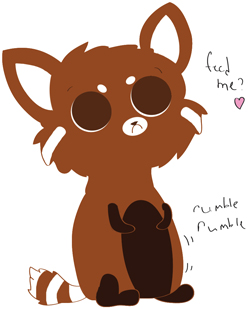

Art Advice: Where To Begin?
In reality, the question should be “where does it stop?” Everyone draws as a child. Give a kid some crayons and they'll happily draw for hours. Kids draw for the right reasons. They draw for fun, entertainment, and for themseleves. It’s only when we’re older do we become self conscious of our glorious stick figures and cease to draw. If you learn to be proud of your work and less concerned about what others will think, then you won't have this fear to branch out. You'll have the ability to critically look at your art and point out what you did well and what needs improvement.
"But I can't draw!"
Never convince yourself of this, because yes you can! It might look like utter crap, but you can draw. Artists didn't suddenly develop their skills overnight. It takes years of dicipline and motivation to become even moderately good. Everyone starts somewhere. Infact, there are hundreds of failures the artist went through before they created something to be proud of. Only over time do skills develop. You are the only one holding yourself back!
Failures Are Inevitable!
Behind every master piece there were 100 or 1,000 failures where the artist devloped and refine his or her skills until they finally produced something amaazing. Art and design skills are difficult ones to develop simply because it's so painful to spend hours into a piece only to end up going “…Yep. That’s awful.”
But what we learn from these failures help better ourselves. It shows us our weaknesses - whether it be the anatomy, shading, coloring, etc.
Push Yourself. Try New Things!
It's great to push yourself and branch out to new styles regardless if you like the outcome. It allows you to test your strengths and weaknesses. It forces you to look at something in a different perspective. You cannot go through your noraml routinue and will have to stop problems in alternative ways. Test the waters of all sorts of styles - you might just find your new style! Below are just a few of my successful attempts at a new style.|  | |
|
|
 |  |
|
|
 |  |
|
|